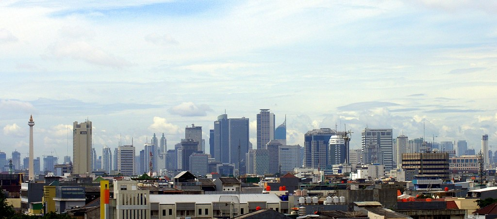
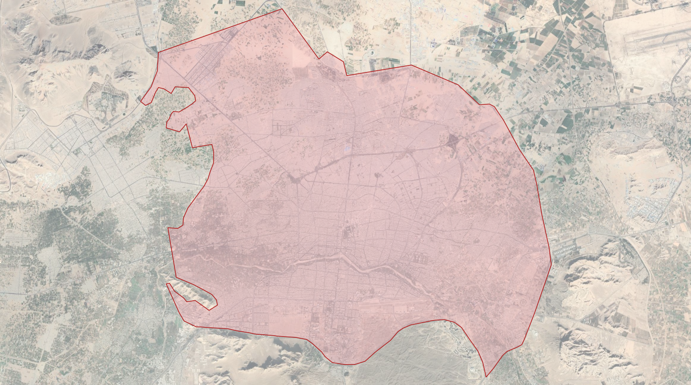
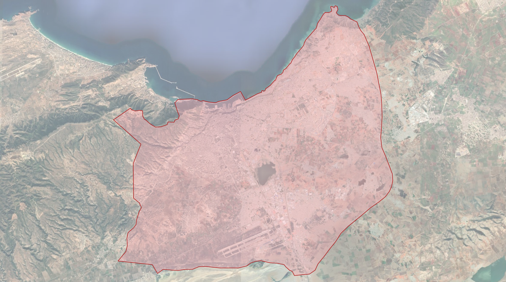
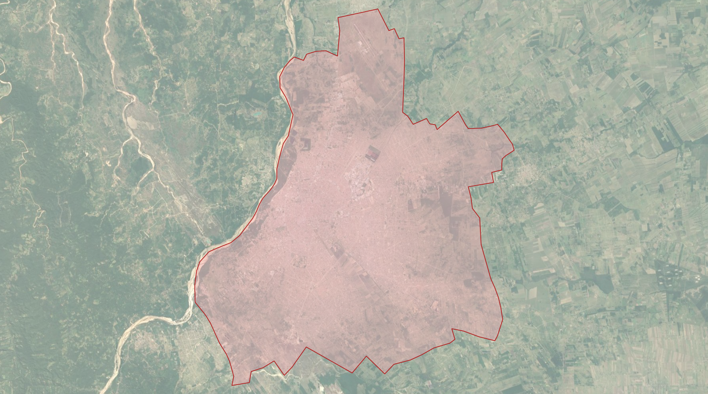

Megacities This is a blog post by stepps00 that was published on Feb 11, 2021 and tagged megacity, locality, whosonfirst, wof and data

Updating our Megacity Localities
In 2019, Who’s On First announced the addition of comprehensive global coverage at the locality placetype; read more about that work here. Building on this locality work, we’ve recently reviewed some of these more populous localities, adding hand-curated geometries, new name translations, and concordances.
Megacities
In Who’s On First, the world’s most populous cities are represented using the wof:megacity property. According to Wikipedia, a “megacity is a very large city, typically with a population of more than 10 million people.” Other sources suggest megacities are defined as having populations lower, closer to five million. While Who’s On First does not have a population cut-off for how these megacities are defined, we have relied on Natural Earth’s Populated Places file for this work. Natural Earth identifies 590 global populated places, each identified with a MEGACITY attribute (actual or emergent), name translations, and concordances, for urban agglomerations with a population of 750,000 or more in 2010.
These large megacities are important to Who’s On First because these densely populated, global cities have particular significance in urbanization; according to the United Nations, nearly 60% of the world’s population lives in urban areas today, growing to nearly 70% in 2050 (source); nearly 25% of the world’s population lives in cities with populations over one million (source). Maintaining accurate, localized names and detailed geometries for populous localities will not only help our users, but also help geocoding and map services that rely on Who’s On First data.
Some examples of these megacities, displayed in Who’s On First’s Spelunker tool:
What was updated?
In total, Who’s On First now has 590 locality records that maintain a wof:megacity property.
To begin this work, the Populated Places file from Natural Earth was used to identify locality records in Who’s On First that should be flagged with a wof:megacity property. Once identified, we confirmed the presence or added the wof:megacity property on these records maintained in the whosonfirst-data administrative repositories.
Once these populated places were matched to current Who’s On First records, a simple Python script was used to automate the import of the Populated Places’ attributes into new properties on each Who’s On First records. These properties include:
- Name translations
- Label centroid locations
- Concordances to Natural Earth and Wikidata, when available
Here is an example of these updates in a GitHub pull request for records in Iran.
Updating Geometries
In cases where Who’s On First only maintained a Point geometry for one of these populated places, we were interested in creating a new Polygon geometry. Because many of these localities are represented at more than one placetype in Who’s On First - Toronto, for example, is represented as both a county, and locality - we were able to use existing “parent” geometries of some of these localities to create (or re-use as) new megacity geometries. In other cases, we hand-curated new geometries using QGIS software.
Because megacities often spread over a larger metropolitan area, we are creating polygons for the “core” cities (which can sometimes be a handful of cities), but we’re exploring creating metropolitan area polygons, too. Please reach out to us via a new issue if you are interested in this work.
A few examples of these new geometries:
 Barquisimeto, Venezuela
Barquisimeto, Venezuela
 Isfahan, Iran
 Oran, Algeria
 Santa Cruz, Bolivia
 Dar es Salaam, Tanzania
Dar es Salaam, Tanzania
Benefits
Aside from our goal to maintain accurate place data in Who’s On First, this work is helpful for two use cases worth calling out.
First, the wof:megacity property is helpful to geocoding service by identifying “big name” geocoding targets. The wof:megacity properties can be used by geocoding services like Pelias to decorate search results for these major localities.
Second, this work curated more accurate name and zoom properties. The mz:min_zoom and mz:max_zoom properties for these places were updated using Natural Earth’s Populated Places file file. Name translations for megacities were also updated. Combined, these new properties help display map labels for large, global cities at the correct zoom levels.
You can browse the megacity records via Who’s On First’s Spelunker tool.
What’s Next
While we’ve taken time to update administrative records with new geometries, properties, and concordances, we’ve also been quite busy updating and iterating on Who’s On First’s various tools. Take a look at our go-whosonfirst-spatial and go-whosonfirst-spatial-sqlite repositories for details. The new megacity geometries we’ve added will be excellent candidates for new and in-progress spatial tools.
Photo Credit: Stenly Lam, flickr